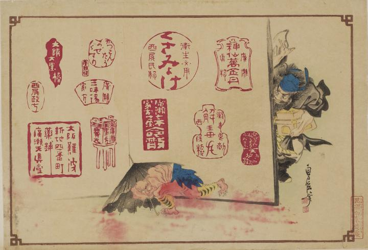

鐘馗；ショウキ，疫神；エキシン

鐘馗に追われる化物。黒い洋傘に身を隠しながら逃げている。肌は赤く足先には鋭い爪が生えている。紺色の腰巻と虎柄の脚絆をつけている。
著作者：二世長谷川貞信／出典：親書誌：U426_nichibunken_0015：くさみよけ；クサミヨケ，解毒丸；ゲドクガン，蘇命散；ソメイサン／日付：2006／資源識別子：U426_nichibunken_0015_0001_0000
Copyright (c)2010- International Research Center for Japanese Studies, Kyoto, Japan. All rights reserved.